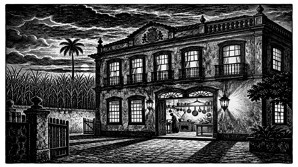
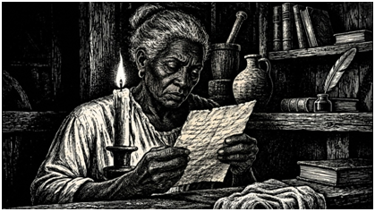
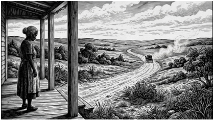
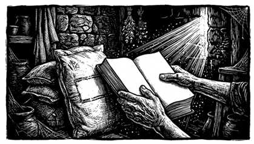
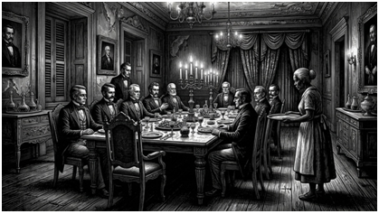
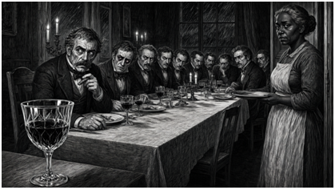
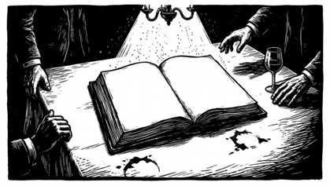
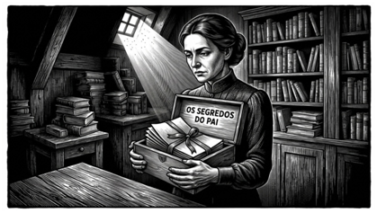
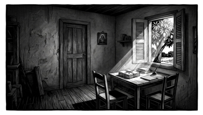
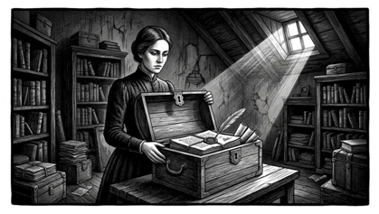

Fac-símile do Manuscrito de Feliciana
Transcrição do manuscrito de 1876 em formato de papel envelhecido, com anotações marginais de Tomás.
Documento ficcional Abrir documento →A memória servida à mesa dos senhores. Leia com os olhos ou acompanhe com os ouvidos — o livro está nesta página.
Transcrição do manuscrito de 1876 em formato de papel envelhecido, com anotações marginais de Tomás.
Documento ficcional Abrir documento →Reconstrução digital dos lançamentos de 1865–1873, com filtros por participante.
Reconstrução digital Abrir livro de contas →Ensaio que separa fato histórico documentado de licença poética, com referências historiográficas.
Ensaio Ler ensaio →Dossiê documental e histórico: fontes acadêmicas, processos judiciais, legislação imperial e contexto histórico de Pernambuco entre 1865 e 1877.
Dossiê histórico Entre a Ficção e o Arquivo — Dossiê Documental & HistóricoO texto completo do romance está abaixo. Use o sumário para ir a um capítulo; o botão Ouvir narra a partir do ponto escolhido.
A fronteira entre a lenda digital e a história real pode ser um território fértil para a literatura, desde que o escritor não confunda invenção com documento. Foi nesse espaço de aproximação e distinção que nasceu este livro: não como reconstituição de um acontecimento comprovado, mas como romance de ficção histórica inspirado por uma narrativa que circulou na internet e por uma realidade social amplamente documentada.
Em dezembro de 2025, começou a circular em páginas eletrônicas e redes sociais uma história intitulada O Banquete Fatal Que Eliminou 11 Fazendeiros — A Ceia Mortal do Sobrado de Pernambuco, 1873. A narrativa descrevia uma reunião de onze proprietários rurais, uma cozinheira escravizada, um suposto envenenamento coletivo e o desaparecimento da mulher depois da morte dos convidados.
A investigação histórica, entretanto, não confirmou o episódio. A consulta à Hemeroteca Digital da Biblioteca Nacional, ao Arquivo Público Estadual Jordão Emerenciano e a edições do Diário de Pernambuco não permitiu localizar registro do banquete, dos onze homens ou de um inquérito relativo ao suposto envenenamento coletivo.
Feliciana e Tomás são personagens ficcionais. Não são apresentados como indivíduos históricos cuja existência tenha sido comprovada por documentos. Suas experiências, porém, foram construídas a partir de situações que marcaram a vida de numerosas famílias submetidas à escravidão.
A homenagem é dirigida às mulheres que tiveram seus nomes apagados, às crianças afastadas de suas famílias e a todos aqueles cuja experiência raramente encontrou lugar nos documentos produzidos pelos grupos dominantes.
O leitor encontrará neste romance uma história inventada, mas não uma realidade social inventada. Que a leitura seja também um convite à reflexão sobre o que os documentos registram, o que deixam de registrar e o que a literatura pode fazer sem pretender ocupar o lugar da prova histórica.
Erigutemberg Meneses — Advogado, escritor e pesquisador. Blumenau, Santa Catarina, Brasil. Novembro de 2026.

O ar cheirava a açúcar queimado e a promessas antigas. Entre a casa-grande e a senzala, uma distância separava não apenas os corpos, mas também as possibilidades de escolher o próprio destino.
Era dezembro de 1873. O calor parecia permanecer sobre Pernambuco mesmo depois que o sol começava a baixar. Vinha do litoral, atravessava os caminhos de terra, acompanhava os cursos dos rios e entrava pelas janelas dos sobrados.
Pernambuco era uma sociedade de contrastes. Nos sobrados e nas casas-grandes, acumulavam-se móveis importados, cristais, livros e objetos que indicavam riqueza. Nas propriedades rurais, homens e mulheres escravizados trabalhavam sob coerção, sujeitos à vontade de seus senhores e às necessidades de uma economia que os tratava como propriedade.
A Lei do Ventre Livre, promulgada em 28 de setembro de 1871, havia introduzido uma alteração importante na legislação imperial. Os filhos de mulheres escravizadas nascidos a partir daquela data eram considerados livres, embora a própria lei estabelecesse condições que mantinham essas crianças sob a autoridade dos senhores de suas mães durante parte da infância e juventude.
Tomás, filho de Feliciana, nascera em 1852. Em 1865, quando foi separado da mãe, tinha treze anos. A legislação de 1871 não alterava retroativamente sua condição jurídica.
Feliciana conhecia aquela divisão melhor do que qualquer pessoa. Aos quarenta e dois anos, trabalhava como cozinheira no sobrado. Sabia ouvir. Não porque tivesse acesso a todas as conversas, mas porque aprendera a perceber o que mudava quando alguém entrava numa sala.
Naquela manhã de dezembro, enquanto preparava a massa do pão, pensava no filho. Tomás.
O nome surgia sem que precisasse chamá-lo. Havia oito anos que o rapaz fora retirado de sua convivência.
Na mesa da cozinha havia uma carta recebida meses antes. Tomás informava que estava vivo, que aprendera a ler e que ainda se lembrava da mãe. O papel, dobrado muitas vezes, apresentava as marcas de quem o abrira e fechara repetidamente.
A casa se preparava para receber onze homens. Na cozinha, a mulher que os serviria reunia, em silêncio, as lembranças que eles julgavam enterradas.
As casas antigas guardam mais do que móveis e retratos. Guardam também as marcas das decisões tomadas por aqueles que nelas viveram.
O Sobrado dos Cavalcante fora construído em 1812, segundo a tradição da família. No alto da entrada, o brasão da família exibia uma mão segurando um feixe de cana. A divisa em latim — Manus quae tenet, tenetur — podia ser traduzida como: a mão que segura também é segurada.
Joaquim acordava cedo. Aos cinquenta e oito anos, tinha o rosto marcado pelo sol e pelos hábitos de uma vida de trabalho, negócios e autoridade. Sua esposa, Maria Amélia, morrera vinte anos antes.
Henrique tinha trinta e um anos. Estudara Direito no Recife e voltara à propriedade com ideias diferentes das do pai. Falava sobre mudanças econômicas, investimentos e a necessidade de adaptar a administração dos engenhos às transformações do país.
— O jornal voltou a falar da queda do preço do açúcar — comentou.
— Os preços sobem e descem.
— Também há notícias sobre os efeitos da Lei do Ventre Livre.
— A lei não muda uma propriedade de um dia para o outro.
— Não muda tudo — respondeu Henrique. — Mas muda alguma coisa.
No começo da noite, a casa estava preparada. A mesa da sala de refeições receberia os convidados. Feliciana conferiu cada cadeira.
Eram doze lugares: um para Joaquim, dez para os convidados e um que permaneceria vazio. O lugar vazio não representava uma pessoa que estivesse prestes a chegar. Representava alguém cuja ausência continuava presente na vida de Feliciana. Tomás.
Há mulheres que habitam as casas e há mulheres que aprendem a conhecê-las. Feliciana pertencera, durante muitos anos, à segunda categoria.
Feliciana nascera numa propriedade rural de Pernambuco. Aos quarenta e dois anos, conhecia a rotina do Sobrado dos Cavalcante como poucos. Acordava antes do amanhecer. Lavava o rosto numa bacia de barro, vestia o avental e começava a preparar o café.
A carta de Tomás estava sobre a mesa. Chegara em setembro de 1873, por intermédio de Elias, que trabalhava levando notícias entre propriedades.
Minha mãe,
Escrevo estas linhas sem saber se chegarão às suas mãos. Elias me disse que a senhora continua no Sobrado dos Cavalcante e que ainda espera notícias minhas.
Estou vivo. Aprendi a ler com um homem que trabalhava na propriedade onde estive por algum tempo. Não sei se conseguirei vê-la novamente. Mas não esqueci a senhora.
Peço que tenha cuidado. Os homens que nos separaram ainda possuem influência.
Seu filho,
Tomás.

A alforria que recebera em 1869 havia alterado sua condição jurídica. O documento concedia-lhe liberdade sob condições relacionadas à continuidade do serviço na casa. No documento, sua condição estava alterada. Na vida cotidiana, continuava a precisar calcular as consequências de contrariar o antigo senhor.
A memória tornou-se seu primeiro arquivo. Guardava nomes, datas aproximadas e frases ouvidas em diferentes ocasiões. Não queria apenas recordar. Queria compreender.
Em 1865, bastava trocar os nomes: chamar uma pessoa de "peça", a separação de "transferência" e a dor de "negócio". A violência adquiria, assim, a aparência de uma operação comercial.
Em maio de 1865, na Zona da Mata pernambucana, Feliciana compreendeu que uma família podia ser desfeita sem que os responsáveis precisassem levantar a voz.
— Feliciana, Tomás será levado.
— Levado para onde, senhor?
— Para outra propriedade. É uma decisão de negócio.
— Que negócio pode ser feito com meu filho sem que eu saiba?
— Não cabe a você discutir os negócios da propriedade.
— Ele tem treze anos.
— Sei quantos anos tem.
— Então sabe que ainda é uma criança.

A transferência de Tomás não fora uma decisão isolada de Joaquim. Ao longo dos meses seguintes, Feliciana começou a reconhecer os nomes que apareciam nas conversas dos homens.
Joaquim autorizara a operação. Antônio intermediara os interesses comerciais. José preparara o instrumento jurídico. Luís fornecera o documento médico utilizado para justificar a retirada. Raimundo organizara o transporte. Evaristo cuidara dos registros financeiros relacionados ao negócio.
Esses seis homens estavam ligados diretamente à transferência.
Em 1869, quatro anos depois da separação, Joaquim concedeu a Feliciana uma carta de alforria condicional. A pergunta que a acompanhava, porém, permanecia: Por quê?
Há homens que constroem fortunas. E há fortunas que, depois de construídas, passam a decidir que espécie de homem seus donos podem ser.
Em dezembro de 1873, onze homens estavam ligados por uma rede de interesses que se desenvolvera ao longo de vários anos. Seis estavam diretamente relacionados à transferência de Tomás, em 1865. Os outros cinco haviam se aproximado posteriormente.
Aos cinquenta e oito anos, era o anfitrião do encontro e o homem cuja decisão estivera na origem da transferência de Tomás. Em 1865, autorizara a transferência do rapaz.
Tinha quarenta e nove anos e mantinha uma casa comercial na Rua do Bom Jesus, no Recife. Em 1865, intermediara a transferência de Tomás.
Tinha cinquenta e um anos e atuava como advogado em Olinda. Em 1865, preparara o instrumento relacionado à transferência de Tomás.
Tinha quarenta e seis anos e mantinha consultório no Recife. Em 1865, fornecera o documento médico utilizado para justificar a retirada de Tomás.
Tinha trinta e nove anos e trabalhava com atividades ligadas ao armazém e ao transporte de mercadorias. Em 1865, organizara o transporte de Tomás.
Tinha sessenta e quatro anos e vivia em Goiana. Em 1865, organizara registros financeiros relacionados à transferência.
Tinha cinquenta e cinco anos. Era advogado e político. Não havia participado diretamente da transferência de Tomás em 1865.
Tinha sessenta e dois anos e herdara do pai uma propriedade açucareira. Não há razão para tratá-lo como participante da transferência de Tomás.
Tinha quarenta e cinco anos e herdara um engenho que, durante algum tempo, lhe proporcionara uma vida confortável. Sua aproximação com os seis homens ocorrera depois de 1865.
Tinha cinquenta e sete anos e dividia seu tempo entre o Recife e os contatos comerciais no exterior. Sua aproximação com o grupo ocorrera por meio de operações de exportação posteriores.
Tinha trinta e quatro anos e era o mais jovem entre os onze. Não participara da transferência de Tomás.
Os onze homens tinham histórias diferentes. A rede se sustentava em relações de dependência, troca de favores, interesses econômicos e circulação de informações. Mas havia uma coisa que não estava inteiramente sob o controle deles: a memória de quem sofrera as consequências.
Evaristo Gouveia confiava nos documentos. Não porque acreditasse que o papel fosse incorruptível, mas porque sabia que os homens podiam negar uma conversa, alterar uma lembrança e até jurar que nunca haviam conhecido alguém.
Na tarde de dezembro de 1873, abriu o compartimento e retirou um volume de capa escura. Entre as anotações, uma delas o deteve:
12 de julho de 1865. Recebido de J. C. a quantia de oitocentos mil-réis, referente à transferência de Tomás, filho de Feliciana, conforme instrumento lavrado por J. T. em 5 de maio do corrente ano. Testemunhas: A. V. e L. C.
Evaristo passou o dedo pela linha. Conhecia cada abreviatura: Joaquim Cavalcante, José Tavares, Antônio Vanderlei e Luís Carneiro.
Em janeiro de 1872, recebeu uma carta anônima. O remetente afirmava conhecer a existência do livro e saber o que havia dentro. Evaristo guardou a carta no compartimento e não respondeu.
Meses depois, percebeu que uma correspondência de José Tavares, relativa à transferência de Tomás, não estava onde deveria. A carta não apareceu.
A carta chegaria em setembro, e a frase que mais inquietava Feliciana não era a que falava da saudade, mas a que dizia "os homens" — não "o homem" — como se a separação tivesse sido obra de muitos.
Minha mãe,
Escrevo estas linhas sem saber se chegarão às suas mãos. Elias me disse que a senhora ainda espera. Eu também espero, embora já não saiba exatamente o que espero.
Aprendi a ler com um homem que passava pela propriedade onde estou. Agora consigo ler cartas e jornais. Descobri que o mundo é maior do que o lugar em que me mantiveram, mas não é mais justo por causa disso.
Peço, porém, que tenha cuidado. Os homens que nos separaram não gostam de ser procurados. Prefiro que a senhora viva com a saudade a saber que a verdade lhe custou a vida.
Um dia, se Deus quiser, nos veremos. Se não for possível, que ao menos a verdade não desapareça conosco.
Seu filho,
Tomás.
Na manhã seguinte, Feliciana procurou Elias. Ele explicou que Antônio Vanderlei havia intermediado a transferência; José Tavares preparara os documentos; Luís Carneiro assinara o documento médico; Raimundo Lessa organizara o transporte; e Evaristo Gouveia cuidara dos registros financeiros.
Foi numa tarde de novembro, enquanto organizava a despensa, que encontrou um caderno de capa escura atrás de uma saca de farinha. Encontrou Tomás. Encontrou a data de 1865.

Há convites que se enviam por cortesia e há convites que se enviam por precaução. Os segundos exigem resposta, ainda que o destinatário preferisse não recebê-los.
A reunião estava marcada para 14 de dezembro, no Sobrado dos Cavalcante. Os convites foram preparados no dia 8.
Meu prezado amigo e correligionário,
Tenho a honra de convidar Vossa Senhoria para uma reunião reservada, que se realizará neste Sobrado na noite de 14 de dezembro do corrente ano, às oito horas.
O propósito do encontro é discutir assuntos de interesse comum aos proprietários da região, em particular os desdobramentos da Lei do Ventre Livre e seus possíveis efeitos sobre nossas propriedades e atividades agrícolas.
Sua presença será de grande importância.
Com os meus melhores cumprimentos,
Joaquim Cavalcante de Albuquerque.
A referência à Lei do Ventre Livre oferecia uma justificativa respeitável. O assunto era suficientemente legítimo para justificar uma reunião. E suficientemente amplo para ocultar o verdadeiro motivo.
Na noite de 14 de dezembro de 1873, o sobrado parecia mais iluminado do que de costume. Não eram as velas que o tornavam diferente, mas a expectativa daqueles que sabiam haver assuntos antigos à espera de uma resposta.
Feliciana trabalhava havia três dias na organização da ceia. A carne de porco fora temperada com antecedência. A mandioca estava separada. O bacalhau aguardava o momento de ir ao forno.
Ela não preparava uma armadilha. Não havia decidido envenenar os convidados, nem pretendia provocar a morte de qualquer um deles. Queria observar, ouvir e compreender o que ainda lhe faltava saber.
Feliciana contou os lugares. Dez destinados aos convidados. Um para Joaquim. E um lugar adicional, sem cartão de nome. Doze ao todo.
Não explicou a ninguém por que aquele último lugar permanecia vazio. Não era uma cadeira reservada a alguém que pudesse chegar naquela noite. Era uma lembrança. Uma ausência que não precisava de convite para ocupar a casa.
Doze lugares, onze homens e uma cadeira vazia. Ninguém perguntou por que ela estava ali.
Os convidados começaram a chegar pouco depois das oito. Antônio Vanderlei foi o primeiro. Francisco Albuquerque chegou em seguida, numa carruagem. Manuel Rego Barros chegou depois. Luís Carneiro veio de carruagem. José Tavares chegou com uma pasta de documentos debaixo do braço. Bento Figueira foi o seguinte. Raimundo Lessa chegou pouco depois. Álvaro Siqueira veio numa carruagem bem conservada. Celso Maranhão chegou a cavalo. Evaristo Gouveia foi o último.

Feliciana entrou com o primeiro prato. Colocou a travessa sobre a mesa e começou a servir. Não procurou os olhos dos homens. Mas ela observava.
O primeiro brinde fora feito à prosperidade, o segundo à continuidade dos negócios, o terceiro à prudência. Mas Bento, que bebia mais do que os outros, já não conseguia sustentar o silêncio de oito anos.
— Não é assim tão simples — disse Bento.
— O que não é simples, Bento?
— Há negócios que continuam depois que o dinheiro muda de mãos.
— Isso acontece com qualquer negócio mal encerrado.
— Não estou falando de dívidas comerciais.
— Então seja mais claro — pediu Joaquim.
Bento olhou para o anfitrião. Por um instante, pareceu procurar nele alguma possibilidade de amparo. Não encontrou.
— Oito anos — murmurou. — Faz oito anos.
— Bento, não compreendo aonde pretende chegar.
— Eu também não sei se consigo chegar a algum lugar.
— Havia uma mulher — repetiu ele. — E havia um menino.
Não pronunciou os nomes. Talvez ainda não pudesse. Talvez soubesse que, depois de dizê-los, não haveria como fingir que falava de outra coisa.
— Não foi uma decisão tomada por um homem apenas — continuou. — Houve gente que decidiu, gente que providenciou, gente que recebeu. E houve quem soubesse muito bem o que estava acontecendo.
— O senhor está acusando os presentes?
— Estou falando de mim também.
O intervalo entre os pratos ofereceu aos homens a oportunidade de se afastar da mesa. Não foram procurar apenas ar fresco ou charutos: queriam medir o alcance do que Bento havia começado a dizer.
Antônio Vanderlei entrou primeiro no fumante. Evaristo Gouveia apareceu pouco depois.
— O livro continua seguro?
— O senhor é quem deveria saber.
— Sei onde está o original.
— E sabe quem mais sabe?
— Pouquíssimas pessoas.
Na varanda, Joaquim Cavalcante e Francisco Albuquerque permaneciam afastados dos demais.
— O senhor percebeu como Feliciana nos observa?
— Percebi que trabalha. Como sempre trabalhou.
— Ela está diferente.
— Uma mulher pode mudar de comportamento sem que isso represente uma ameaça.
Bento encontrou Raimundo Lessa no corredor, perto da porta que dava acesso à escadaria lateral.
— Eu tentei corrigir aquilo.
— O senhor já disse isso.
— E o senhor sabe que é verdade.
— Sei que o senhor se arrepende. Não é a mesma coisa.
Celso Maranhão esperou Bento junto à escadaria.
— O livro ainda existe?
— Quem lhe falou do livro?
— Ninguém.
— Não minta para mim.
Bento olhou para a cadeira vazia e disse, com a voz baixa de quem atravessa uma porta que não sabe mais encontrar aberta: "Ele tinha nome. Tomás."
E o nome atravessou a sala sem precisar ser repetido.
Feliciana acabava de recolher um prato quando percebeu que Bento não havia tocado no seu. Ele permanecia sentado, com as mãos apoiadas junto aos talheres.
— Não pronuncie esse nome.
— O senhor não tem o direito de decidir isso — disse Bento.
— Nesta casa, tenho.
— Não sobre ele.
Bento olhou uma última vez para os homens. A voz saiu baixa, quase sem ar.
— Tomás.
Feliciana sentiu o corpo enrijecer. Não deixou cair a travessa. Não chamou ninguém. Durante oito anos, aquele nome fora pronunciado em cartas, lembranças e pensamentos que ela não podia compartilhar com os homens daquela casa. Agora chegava à mesa onde o destino do menino havia sido decidido.

Feliciana permaneceu junto à porta da cozinha, observando os homens que haviam participado da separação de seu filho, não para acusá-los indiscriminadamente, mas para compreender o que cada um fizera, omitira ou pretendia fazer depois daquela noite.
O nome ainda parecia ocupar a sala. Tomás.
Feliciana olhou para Joaquim Cavalcante. Conhecia a maneira como ele chamava os empregados, o modo como interrompia uma conversa e o silêncio que exigia quando entrava numa sala. Recordava a noite em que lhe comunicara a separação de Tomás.
Antônio Vanderlei era diferente. Seu nome aparecia em mais de um papel que chegara às mãos dela.
Francisco Albuquerque lhe inspirava outro tipo de cautela. Era homem de palavras. Sabia falar de ordem, de prudência e de interesse público.
Feliciana voltou os olhos para Luís Carneiro. O médico. Era o homem que conhecia o corpo dos outros e cuja assinatura aparecia associada a um documento que justificara uma decisão sobre Tomás.
Seu avental não era um arquivo organizado como o de um escritório. Era o lugar possível para conservar o que, de outro modo, poderia desaparecer.
— A senhora ouviu o que disseram?
— Ouvi o bastante.
— E agora?
— Agora é preciso saber o que cada um fez.
Celso Maranhão pousou a xícara sobre a mesa e disse o que até então escutara sem interromper: "Em maio de 1872, descobri que o livro não havia desaparecido."
Os homens compreenderam que o assunto nunca fora encerrado.
— Em maio de 1872, descobri que o livro não havia desaparecido.
— O senhor não sabe onde ele está — disse Evaristo.
— Sei que existe. Para mim, já é suficiente.
— Não é a mesma coisa.
— Não. Não é. Mas basta para compreender que o assunto nunca foi encerrado.
A declaração acrescentava uma informação importante: em maio de 1872, a existência dos registros já era conhecida por alguém que não integrava a operação original.
A porta da cozinha se abriu. Feliciana apareceu com um volume embrulhado num pano escuro. Não trazia uma bandeja nem procurava recolher pratos. Caminhava como quem já não pretendia pedir licença para falar do próprio filho.
— Feliciana, o que significa isso?
— Na despensa. Estava escondido atrás de uma saca de farinha.
— Esse não é o original.
— Então o senhor conhece o original?
Evaristo não respondeu.
— É um livro de contas — respondeu Feliciana. — Tem nomes, datas e valores. Alguns eu reconheço. Outros ainda preciso que alguém me explique.
— A senhora não tem autorização para trazer documentos particulares à mesa.
— Não pedi autorização para encontrá-los.
— São documentos que não lhe dizem respeito.
— Meu filho aparece neles.
A frase encerrou a tentativa de Joaquim de reduzir o assunto a uma questão de propriedade.
— A senhora está esquecendo sua condição nesta casa.
— Não esqueci. Foi nesta casa que meu filho me foi tirado. Foi nesta casa que aprendi a escutar sem ser ouvida. Foi nesta casa que encontrei os papéis que os senhores acreditavam ter escondido.

O livro permanecia aberto sobre a mesa. Feliciana apontou para uma linha: "Este nome. Tomás. Esta data. 1865. E este número."
— Um lançamento isolado não demonstra a operação inteira — disse José.
— Então examine os outros — respondeu Feliciana.
— A letra é minha. — declarou Evaristo.
— O senhor confirma a autoria? — perguntou Celso.
— Confirmo a caligrafia. Não confirmo a interpretação que estão dando ao registro.
Feliciana voltou-se para Raimundo Lessa.
— O senhor levou Tomás?
— Fiz um serviço de transporte.
— Levou meu filho?
— Não fui eu quem decidiu a transferência.
— Mas foi o senhor quem o transportou?
— Sim.
A palavra alterou a posição dos homens à mesa. Já não se discutia apenas o sentido de um lançamento. Um dos envolvidos confirmara uma etapa concreta da operação.
— Para os senhores, talvez fosse uma conta. Para mim, era meu filho.
Na manhã de 15 de dezembro, o delegado Amaro de Mendonça chegou ao sobrado e encontrou três homens mortos, oito sobreviventes e uma narrativa que já começava a se organizar antes que os fatos fossem esclarecidos.
Bento Figueira estava caído próximo à passagem para a cozinha. Manuel Rego Barros permanecia junto à cadeira, com o corpo inclinado para um lado. Evaristo Gouveia estava no chão, encostado à parede.
O Dr. Teodoro Silva chegou pouco depois das dez. Ao terminar o exame, chamou Amaro para um canto.
— Não posso determinar a causa dessas mortes apenas com este exame.
— O senhor suspeita de alguma coisa?
— Há circunstâncias que merecem investigação. Mas não seria responsável afirmar que houve envenenamento sem exame adequado.
As respostas dos sobreviventes tinham diferenças, mas uma coincidência chamava a atenção: nenhum deles sabia onde estava Feliciana.
— Sei que a senhora Feliciana não fez aquilo que estão dizendo. — disse Inácio.
Ao final da tarde, o registro foi redigido de maneira a favorecer a hipótese de mortes sem intervenção de terceiros e a indicar Feliciana como pessoa a ser localizada e ouvida.
— Isso não responde ao que aconteceu — disse Teodoro.
— Não — respondeu Amaro.
— Então por que assina?
— Porque há homens nesta casa que já decidiram o que querem que seja escrito.
O volume encontrado por Feliciana não era o original. Era uma cópia preparada por ordem de Evaristo Gouveia em 1868 e escondida na despensa do Sobrado dos Cavalcante.
A distinção era importante. O original permanecia em Goiana, guardado em um cofre. A cópia fora feita para preservar parte dos registros caso o primeiro volume fosse perdido, confiscado ou se tornasse inacessível.
O livro não era um documento público. Não substituía o instrumento lavrado em cartório, nem as anotações financeiras mantidas separadamente. Era um registro privado de controle entre os envolvidos.
Foi esse volume que ela levou à mesa em 14 de dezembro de 1873. O original permaneceu em Goiana. A cópia, porém, já havia cumprido uma função que Evaristo não previra: permitira que Feliciana conhecesse parte da estrutura que havia separado sua família.
Feliciana deixou o Sobrado dos Cavalcante antes do amanhecer de 15 de dezembro de 1873.
Não levou dinheiro, joias ou roupas que não pudesse carregar. Levou um bornal com a carta de Tomás, a cópia da correspondência de Raimundo, a carta de Antônio encontrada por Cecília e os papéis que reunira durante sua investigação.
Não levou o caderno de contas. O volume havia sido colocado sobre a mesa durante a reunião. Depois da discussão, os homens se dispersaram. Feliciana não o recuperou antes de sair.
— Trouxe os papéis?
— Os que estavam comigo.
— E o livro?
— Ficou na casa.
— Tem certeza?
— Não sei onde está agora. Coloquei-o sobre a mesa. Depois, os homens começaram a sair e eu não consegui recuperá-lo.
Elias a esperava próximo ao cruzamento. Caminharam por algum tempo antes de encontrar abrigo.
— Ele está perto do Recife — disse.
— A carta indica isso.
— Não sei onde exatamente.
— Vamos procurar.
— E se ele não quiser me ver?
— A senhora não pode saber disso antes de encontrá-lo.
Na manhã de 15 de dezembro de 1873, oito homens deixaram o Sobrado dos Cavalcante. Três permaneceram mortos na casa: Bento Figueira, Manuel Rego Barros e Evaristo Gouveia.
O tempo não os trataria da mesma maneira.
Joaquim Cavalcante continuou a administrar suas propriedades. Henrique, seu filho, assumiu gradualmente parte da administração. Cecilia permaneceu na propriedade. Foi ela quem conservou uma carta de Feliciana encontrada na cozinha. Em 1885, quando a campanha abolicionista já ocupava as conversas públicas, Cecilia leu novamente o documento.
Antônio Vanderlei prosperou. Expandiu seus negócios e manteve relações comerciais com proprietários rurais. Morreu em 1896, deixando patrimônio considerável e uma gaveta de documentos que permaneceu fechada durante anos.
Francisco Albuquerque continuou na política. Durante a noite do banquete, retirara a chave do cofre de Evaristo. O gesto foi mencionado posteriormente e passou a integrar as lembranças sobre aquela reunião. Mas o que se sabia era limitado.
Luís Carneiro continuou a exercer a medicina. Sua filha Helena cresceu cercada por livros e documentos. Luís morreu sem deixar uma explicação completa sobre o papel que desempenhara.
José Tavares continuou na advocacia. Sua filha Clara encontrou parte dos papéis entre os documentos da família.
Raimundo Lessa manteve seus negócios de transporte. Em 1878, sua esposa Carlota deixou a casa com os filhos. Morreu em 1892.
Álvaro Siqueira continuou como exportador. Sua filha Margarida aproximou-se de círculos abolicionistas. Morreu em 1899.
Celso Maranhão procurou modernizar seus negócios. Morreu em 1905.
Eram três questões distintas: a chave, o original e a cópia. Confundi-las seria transformar uma sequência de acontecimentos incompletamente documentada numa certeza que não existia.
Em outubro de 1908, Helena Carneiro encontrou os documentos que mudariam a maneira como compreendia a história de sua família.
No fundo de uma caixa de madeira, encontrou um conjunto de papéis amarrados por uma fita já ressecada. Na tampa, estava escrito o nome de seu pai: Luís Carneiro.

O primeiro documento era uma cópia de um instrumento datado de 1865. Registrava a transferência de um rapaz chamado Tomás. Ao lado, reconheceu a assinatura do pai.
Entre os papéis, Helena encontrou uma referência a uma mulher chamada Feliciana e a um filho chamado Tomás. Não era ainda uma história completa. Era uma indicação de que a transferência registrada em 1865 havia separado uma mãe de seu filho.
Em março de 1909, depois de meses de procura, recebeu uma informação que permitiu avançar. Um contato ligado ao comércio local confirmou a existência de um homem chamado Tomás, que vivia nos arredores do Recife e conservava papéis relacionados à própria família.
Helena encontrou Tomás numa tarde de março de 1909, numa casa modesta nos arredores do Recife.
A casa tinha paredes caiadas, uma pequena varanda e um quintal onde crescia uma mangueira. Sobre uma mesa, perto da janela, estavam alguns livros, papéis e um tinteiro.

— A senhora é Helena Carneiro?
— Sou. Recebi sua mensagem.
— Agradeço por ter aceitado conversar comigo.
Tomás examinou os papéis sem tocá-los.
— Eu conheço essa história.
— Minha intenção não é pedir que o senhor confirme o que eu gostaria de encontrar. Quero saber o que aconteceu.
— Então é melhor começar pelo que minha mãe me contou.
Falou da separação, das propriedades pelas quais passara e das pessoas que haviam decidido seu destino. Explicou que fora retirado da mãe quando tinha treze anos e que, durante muito tempo, não soubera onde ela estava.
Tomás falou do reencontro em 1877 e dos anos que vivera ao lado da mãe. Contou que Feliciana não conseguia ler fluentemente, mas reconhecia nomes, números e datas. Por isso, quando decidiu organizar sua memória, ditava os acontecimentos e ele os registrava.
— Minha mãe queria que ficasse escrito o que tinha acontecido — explicou. — Não queria que os nomes desaparecessem.
Tomás retirou um maço de papéis amarrados com uma fita de algodão. Colocou-o sobre a mesa.
— Isto ficou comigo.
— O que contém?
— O manuscrito de minha mãe, a carta que ela deixou para quem encontrasse os papéis e a carta que escrevi para ela. Há também outros documentos que conseguimos conservar.
À pessoa que encontrar estes papéis,
Meu nome é Feliciana. Sou mãe de Tomás. Escrevi este relato para que a separação de uma família e os negócios que a provocaram não desapareçam com a memória de quem os viveu.
Não peço que acredite sem examinar. Peço que leia, compare os documentos e procure distinguir o que presenciei daquilo que soube por outras pessoas.
Não escrevi para pedir vingança. Escrevi para que a memória não dependesse apenas daqueles que tinham poder para registrar a própria versão.
Feliciana.
— O senhor quer que tudo isso seja publicado?
— Quero que seja lido. O que farão depois precisa ser pensado. Não quero que a história de minha mãe vire apenas uma acusação contra homens mortos. Quero que se saiba o que fizeram com ela e comigo.
Os filhos não herdaram automaticamente as responsabilidades dos pais. Herdaram propriedades, documentos, nomes e, em alguns casos, perguntas que ninguém lhes ensinara a formular.
Os onze homens não deixaram o mesmo tipo de herança. Alguns deixaram propriedades. Outros, correspondências, contratos, dívidas e arquivos particulares. Três deixaram famílias que precisaram lidar com as consequências de mortes ocorridas durante uma ceia cuja causa não fora esclarecida.
O livro original de contas continuava sem destino conhecido. A chave retirada por Francisco durante o banquete também permanecia sem localização confirmada.
A cópia parcial apresentada por Feliciana teve outro percurso. Foi colocada sobre a mesa em 14 de dezembro de 1873 e vista pelos homens reunidos. Na manhã seguinte, Amaro registrou que nenhum livro fora apresentado.
A lacuna não podia ser preenchida por uma narrativa conveniente.
Sua responsabilidade era preservar os documentos, indicar sua procedência e permitir que fossem examinados. Era essa a decisão que tomou em 12 de março de 1910.
Recife, 12 de março de 1910.
Helena Carneiro colocou duas pastas sobre a mesa.
A primeira continha os documentos encontrados em outubro de 1908 no arquivo de seu pai, Luís Carneiro. A segunda pasta reunia os documentos que recebera de Tomás em março de 1909.
Helena não misturou os conjuntos. Sabia que tinham procedências distintas e que essa diferença precisava permanecer visível.
Senhor.
Encaminho-lhe cópias e transcrições de documentos relativos a acontecimentos ocorridos em Pernambuco entre 1865 e 1873, acompanhadas de uma relação de procedência e identificação das peças.
Não disponho do livro original de contas mencionado nos papéis, nem da cópia parcial que Feliciana apresentou durante a reunião de dezembro de 1873. O destino de ambos permanece sem esclarecimento.
Não afirmo que o material encerre a investigação. Entrego-o para que possa ser examinado, comparado e, se houver fundamento, divulgado.
Atenciosamente,
Helena Carneiro.
Na capa da pasta destinada ao escritor, Helena escreveu:
Feliciana e Tomás — documentos e memória, 1865–1880.
Procedência identificada. Lacunas preservadas.
Não era o fim de todas as perguntas. Era o começo de outra leitura.
A chuva voltou em 1874. Não como bênção. Não como redenção. Voltou como a chuva costuma voltar em Pernambuco: molhando o que já estava molhado, apodrecendo o que já estava podre, revelando o que já estava exposto.
Mas o banquete, o banquete nunca terminou.
Apenas mudou de mesa. Mudou de sobrado. Mudou de sobrenome.

Nos anos 1990, a historiadora brasileira Maria Helena Machado publicou estudos fundamentais sobre o tráfico interprovincial de escravizados após a Lei Eusébio de Queirós (1850). Demonstrou que, proibido o tráfico transatlântico, os senhores brasileiros voltaram-se para o mercado interno. Milhares de homens, mulheres e crianças do Nordeste foram vendidos para os cafezais do Sudeste. Famílias foram separadas.
A historiadora chamou esse processo de indústria da separação.
Há um objeto neste romance cujo destino final o leitor não conhecerá. E essa não é uma omissão: é uma escolha. O romance recusa deliberadamente essa resposta.
Dizer com certeza onde está o livro de Evaristo Gouveia seria mentir. Seria produzir uma ficção que se passa por documento. E este romance, desde a primeira página, declarou que não faria isso.
Os sobrados da Zona da Mata ainda existem. Alguns foram transformados em pousadas para turistas europeus. Outros foram abandonados. Outros, ainda, continuam sendo habitações de famílias que carregam os sobrenomes dos antigos senhores.
O trabalho análogo à escravidão ainda existe. Em 2024, fiscais do trabalho resgataram dezenas de trabalhadores em condições análogas à escravidão em usinas de açúcar no interior de Pernambuco.
Helena Carneiro, a mulher que, em 1908, encontrou os documentos do pai e decidiu revelar a verdade, é a personagem mais importante deste romance. Não porque seja a protagonista — a protagonista é Feliciana. Mas porque Helena representa algo que este livro precisa representar: a possibilidade de que a verdade, mesmo quando escondida por gerações, pode ser encontrada.
Porque a verdade, quando é dita, não pode ser desdita. Porque a memória, quando é registrada, não pode ser apagada. Porque o nome, quando é pronunciado, volta.
Os onze homens que se sentaram à mesa do Sobrado dos Cavalcante acreditavam estar dividindo riquezas. Não sabiam que haviam sido convocados para prestar contas à História.
E a mulher certa chegou. Não em 1873. Não em 1874. Não em 1880. Chegou em 1908, quando Helena encontrou os documentos. Chegou em 1910, quando Helena decidiu revelá-los. Chegou, acima de tudo, em 2026, quando o leitor abre este livro e lê a história de Feliciana.
O Dossiê, o livro e o leitor foram construídos com foco em preservação digital, portabilidade e acessibilidade. Todos são arquivos HTML estáticos, sem dependências externas além das fontes Google.
Erigutemberg Meneses é advogado, escritor e pesquisador. Autor de O Nó do Poço Seu e O Banquete dos Onze.
Perfil ORCID: orcid.org/0009-0009-5108-0585